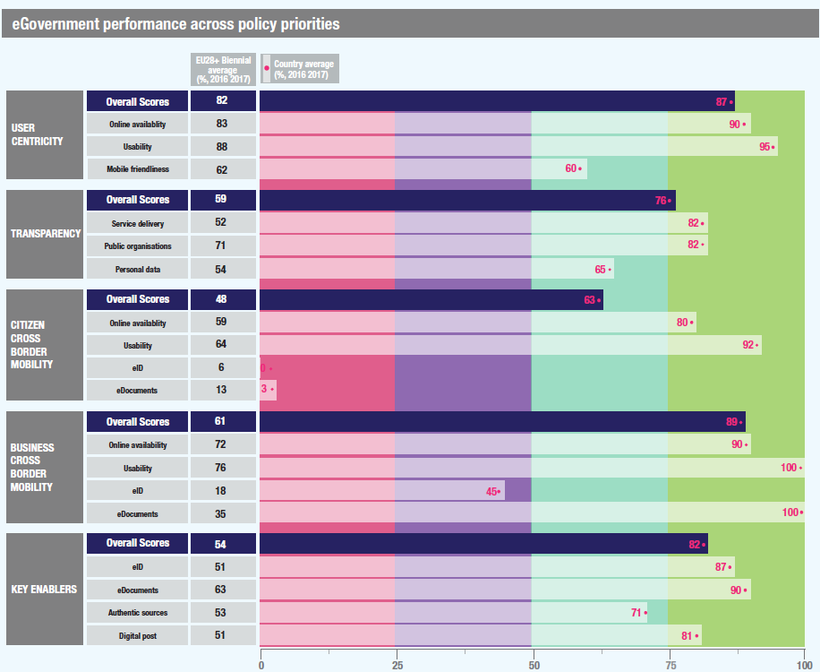

ISA2
Digital Government Factsheet 2019
Latvia
ISA2
Digital Government Highlights 6
Digital Government Political Communications 7
Digital Government Legislation 13
Digital Government Governance 20
Digital Government Infrastructure 24
Digital Government Services for Citizens 31
Digital Government Services for Businesses 41
Population: 1 934 379 inhabitants (2018)
GDP at market prices: 29 523 million Euros (2018)
GDP per inhabitant in PPS (Purchasing Power Standard EU 28=100): 67 (2017)
GDP growth rate: 4.8%
Inflation rate: 2.8%
Unemployment rate: 7.4%
General government gross debt (Percentage of GDP): 40% (2017)
General government deficit/surplus (Percentage of GDP): -0.6% (2017)
Area: 64 562 km²
Capital city: Riga
Official EU language: Latvian
Currency: EUR
Source: Eurostat (last update: 15 March 2019)
The following graphs present data for the latest Generic Information Society Indicators for Latvia compared to the EU average. Statistical indicators in this section reflect those of Eurostat at the time the Edition is being prepared.
Percentage of individuals using the Internet for interacting with public authorities in Latvia | Percentage of individuals using the Internet for obtaining information from public authorities in Latvia |
Percentage of individuals using the Internet for downloading official forms from public authorities in Latvia | Percentage of individuals using the Internet for sending filled forms to public authorities in Latvia |
The graph below is the result of the latest eGovernment Benchmark report, which monitors the development of eGovernment in Europe, based on specific indicators. These indicators are clustered within four main top-level benchmarks:
These top-level benchmarks are measured using a life-events (e.g. mystery shopping) approach. Eight life events are included in the overall eGovernment performance score. Four of these life events were measured in 2013, 2015 and 2017 and the other four were measured in 2012, 2014, 2016, and again in 2018. The life events measured in 2017 were Regular business operations, Moving, Owning and driving a car and Starting a small claims procedure. The life events measured in 2018 are Business start-up, Losing and finding a job, Family life and Studying.

Source: eGovernment Benchmark Report 2018 Country Factsheets
Digital Government Political Communications
Digital Government Legislation
Digital Government Governance
The legal successor to Kaspars Gerhards, the Minister of Environmental Protection and Regional Development, is now Juris Pūce.
Digital Government Infrastructure
Digital Government Services for Citizens and Businesses
Information Society Development Guidelines
The Information Society Development Guidelines for 2014 - 2020 were elaborated to ensure continuity of existing policies and to determine the priorities in the area of Information and Communication Technology (ICT) for the European Union Structural Funds Programming period for 2014 - 2020.
The guidelines were developed in close cooperation with the ICT industry, national ICT associations, the Latvian Chamber of Commerce and Industry, the Latvian Confederation of Employers, the Latvian national committee of UNESCO, representatives of all ministries and representatives of local (municipal) governments. The inclusion of different stakeholders involved in the development of the Guidelines provides a solid ground for a 360-degree analysis of current shortcomings, as well as a thorough understanding of future development needs and priorities, following the overall objective of enhancing the national competitiveness, economic growth and job creation.
The goal of the Guidelines is to provide the opportunity for anyone to use ICT, to create a knowledge-based economy and to improve the overall quality of life by contributing to the national competitiveness and increasing economic growth and job creation.
Special attention in the Guidelines is devoted to the implementation of the open data principle in the public administration. This principle unleashes the growth potential of the digital economy, by making data and information resources created by the public administration easily available to society, thereby establishing a precondition for the spur of new innovative, data-driven business ideas, services, and products. The other cornerstone of the Guidelines is optimising operating processes in the public administration and increasing its efficiency as well as simplifying delivery of public services, by means of efficient and effective eServices and interoperable information systems. It is expected to have an indirect, but very clear positive impact on economic growth, since eGovernment will lead to reduced administrative burden and costs for entrepreneurs, streamlining their interactions with public administration, and allowing them to spare more resources for their entrepreneurship.
Considering the national priorities in the area of Information Society, and objectives of the European Digital Agenda, Guidelines define seven action lines.
The main priorities and action plans of the guidelines are presented below:
1. ICT education and eSkills.
Activities in the field of eSkills will focus on the areas that will facilitate small and medium sized enterprises as well as citizens' motivation for acquiring eSkills. Planned actions include: public information campaigns, development of eSkills for both citizens and entrepreneurs, increasing the ICT competences of public administration, fostering skills of ICT practitioners and professionals to be in line with the requirements of the labour market, as well as increasing focus on algorithmic thinking (the learning of the programmers’ way of thinking by studying mathematics and computer sciences) and information literacy in educational programmes.
2. Widely available access to the Internet.
Actions planned under this priority include mapping of transport networks, provision for further broadband development, and covering all elements of electronic communications network infrastructure. Detailed description of the required actions in those fields is included in the Concept for Development of the Next Generation Broadband Electronic Communications Networks for 2013–2020 (in Latvian).
3. Modern and efficient public administration.
The main benefits of this action will be reflected in the improved efficiency of the public administration (decision-making process, accuracy, conformity to the real situation, the possibility of involving wide public groups in policy planning, evaluation and reduction of administrative costs) as well as delivery of clear, timely and consistent information to citizens about their rights and services of the public administration. Actions will create opportunities for citizens to be widely involved in decision-making and law-making processes using modern technologies. Cooperation and synergies between public and private sector services has a significant administrative burden reduction potential.
Actions for the modernisation of the public administration will be focused on the modernisation of public administration processes, public eParticipation and eDemocracy and ICT infrastructure optimisation. One of the focal points for eGovernment infrastructure modernisation will be the establishment of central building blocks and integration infrastructure to be used by all institutions of public administration for the modernisation of public service delivery and for connecting national eGovernment infrastructure to cross-border platforms. Another focus is on open interfaces (API’s) allowing also for third party developers to develop end-user applications for government services and develop their own products and services using government data.
4. eServices and digital content for the public.
Digital content has an increasingly crucial role in the country’s economic and social development. Digital content plays a key role in research and education as well as in cultural and the public administration sector services. eGovernment solutions enable opportunities for institutions to offer the citizens more accessible and convenient public services, including education and health services, cultural and educational content, and create conditions for a better business environment and social processes.
A series of actions are planned within this stream of activity:
5. Cross-border cooperation for Digital Single Market.
By the free movement of people, goods and services, Latvia is a part of the Digital Single Market. To provide cross-border cooperation in the Digital Single Market, free movement of goods and services as well as the free flow of citizens, national eGovernment solutions should be able to interoperate with the EU solutions (building blocks provided by EU projects such as eSENS, STORK, PEPPOL etc.). Accordingly, actions are planned to ensure that the national eGovernment solutions are interoperable with EU platforms and have content for cross-border services and solutions for exchange of information across different sectors.
6. ICT research and innovation.
Investments in innovation, research and development are crucial also for the companies whose products and provided services in the digital age are subject to even faster technological and process rate changes. Development of ICT research in computer science, information technology, electronics, telecommunications, communication studies as well as innovative support for companies developing new ICT products and technologies, support for development and establishment of new innovative companies. The development of technology transfer systems must be seen in connection with overall objectives of the Information Society.
7. Trust and security.
A secure and reliable electronic information space, where the continuity of essential services for the public administration and the public is ensured, is an essential component for the successful development of the Information Society. An important aspect for the development of Information Society is public trust in the electronic environment. ICT security, human safety and trust in electronic environment are areas where further action is planned.
The implementation of the Guidelines will build upon the technological potential and experience obtained from the previous period (2007 - 2013).
Implementation of the Guidelines is planned from the state budget as well as with attracting the EU Structural Funds and private funding. In the long-term, implementation of the Guidelines will facilitate effective and efficient use of budgetary resources for ICT, improving the efficiency of business processes, the quality and availability of the public services.
The Digital Single Market remains a keynote of the Digital Agenda for Europe. Latvia, by following these Guidelines, will ensure its contribution to the implementation of the Digital Agenda at the national level, as well as the development of the Digital Single Market.
Concept of the organisational model of public ICT management
On 15 January 2013, the Cabinet of Ministers approved concept of the organisational model of public ICT management. The implementation of this model will frame public ICT strategies, principles and scenarios that will ensure strategic coordination of public ICT development and maintenance through partly centralised management: competence and responsibility in ICT management will be shared between the national and sector levels. This optimal ICT management model identifies the main parties involved: the public ICT organisation, sector ICT organisations, hybrid ICT organisations, public administration senior ICT managers forum, and sector ICT management councils. To achieve the aim of optimal ICT management, both public- and private-sector resources will be used, providing effective cooperation focusing on benefits for the public and the creation and maintenance of convenient and user-friendly eGovernment solutions.
Regular monthly meetings of public administration senior ICT managers have significantly improved cross-sectoral communication at ICT management level, providing one of the cornerstones for successful implementation of reuse and efficient collaboration principles defined in the Conceptual Architecture of Public Administration information Systems.
Third National Action Plan for Open Government Partnership
On 4 July 2017, the Cabinet of Ministers approved the report for improving the public services environment. It included proposals for public service provision modernisations, to ensure the efficiency and comprehensive availability of public services including electronically. Within the Open Government Partnership the Third National Action Plan was approved by the Cabinet of Ministers.
The Third Action Plan for Open Government Partnership of Latvia promoted public participation in decision-making, progress towards ‘zero bureaucracy’, as well as the strengthening of ethical values in public administration and transparency in decision-making, procurement procedures and state-owned capital companies.
The approved plan includes a total of 12 commitments focused on cooperation between state institutions and the public, as well as the use of open data. The plan also foresees the continuation of the work on the establishment of an effective whistleblowing mechanism in Latvia.
The improvement and implementation of various services in the internet environment, including the development of an open-source public data portal, a research and publication database, as well as a database of state-owned capital companies play a fundamental role in the plan. In addition, the plan foresees the development of a uniform portal for circulation of draft legal acts and a modern statistics portal, as well as reduce the administrative burden for entrepreneurs and residents through the website.
The plan envisages providing the public with transparent and easily comprehensible information about the state budget, showing the spending of taxpayers' money and the results to be achieved in an interactive way.
No political communication was adopted in this field to date.
Cyber security strategy of Latvia
The national Cyber Security Strategy 2014 - 2018 defined key areas of work, where education, governance of ICT resources, rule of law in the cyber space, crisis management and international cooperation are the top priorities. In order to achieve the main goals and aims, strong cooperation with the private sector was recognised as being crucial, therefore, strengthening of the partnership between private and public sector will be among the top priorities in the future as well. It was adopted on 17 February 2014.
Modernisation of the Natural Persons Data Service
In 2018, the Office of Citizenship and Migration Affairs launched the realisation of project Modernisation of the Natural Persons Data Service No 2.2.1.1/17/I/006 of the European Regional Development Fund. The project has several objectives:
One of the activities of the Project is the development of the information system for the Register of Natural Persons, which will be based on the existing Population Register, extending the population register to foreign nationals who enter into legal relations with the state. The development of the information system of the Register of Natural Persons shall take place in accordance with the provisions of the Law on the Register of Natural Persons.
No political communication was adopted in this field to date.
No political communication was adopted in this field to date.
Conceptual architecture of public administration information systems
On 10 March 2015, the Cabinet of Ministers approved conceptual architecture for public administration information systems. Conceptual architecture is developed in accordance with enterprise architecture modelling approach, covering processes (organisation), information (data), applications (systems) and technology (ICT infrastructure) aspects of public information systems. Conceptual architecture defines the long-term vision for the development of public administration and public services infrastructure, and consists of 40 recommendations, including references to more particular reusable platforms, services and reference models.
National Blockchain Working group
The National Blockchain Working Group was developed by the Ministry of Economics in 2018. This working group includes public sector representatives from State Revenue Services, Bank of Latvia, Latvian Investment and Development Agency, Ministry of Environmental Protection and Regional Development, Ministry of Finance and the Ministry of Economics. As a result of this working group, a policy planning document was written to inform the Cabinet of Ministers about the perspectives and advantages that the blockchain technology can bring to the public and private sector. Within this document, the working group identified two potential pilot projects, which could improve a service provided by a public institution. For one of them (a pilot project regarding State Revenue Services cash register reform) a hackathon will be organised this year in April to develop a potential working pilot project. The organising of the hackathon is still in early stage; therefore, more information will be available later this year. In addition, a representative of the Ministry of Economics has been appointed to represent the Republic of Latvia within the European Blockchain partnership working group. A total of six meetings were attended during last year with the purpose to acquire knowledge about the European Commission initiatives towards blockchain technology, develop a network of contacts for cross-border co-operation and inform about the activities regarding blockchain in Latvia.
Blockchain hackathon
Due to the increasing importance of process and service digitalisation, in April 2019 the Ministry of Economics, in cooperation with State Revenue Service and Startup Wise Guys, organised a hackathon for blockchain technology-based solution. The hackathon was organised to address potential blockchain vulnerabilities in the public sector, especially involving taxation. This was the first local hackathon ever to focus on public services and blockchain technologies. Public and private sector participants developed solutions that will enable the Latvian State Revenue Services to become more digital and efficient, gaining in-depth understanding of industry needs and the opportunities brought by scalable technology product creation.
National Artificial Intelligence (AI) Strategy
In April 2018, the Minister responsible for digital development from Latvia released a Declaration of Cooperation on AI, where the country commits to boost Europe’s technology and industrial capacity in AI and its uptake, including better access to public sector data, while addressing socio-economic challenges and ensuring an adequate legal and ethical framework. Latvia worked on a national strategy with plans to formally adopt it in 2019. The Government agreed to collaborate in order to “develop and promote the use of artificial intelligence to serve humans.” The Minister specified the following areas for collaboration:
Regulation for the public administration services portal
On 4 July 2017, the Cabinet of Ministers approved a Regulation which governed public services and the implementation of the one-stop-shop principle. The Regulation determined the manager of the public administration services portal, his duties, and responsibilities, the duties and responsibilities of the institution, the procedure for the use and management of the public administration service portal, the procedure for the service catalogue and the information included therein.
This Regulation prescribed:
Several regulations were established on the procedures for updating information in the portal to improve availability and use of eServices.
Registration, quality control and procedures for the provision of public administration services
To improve the availability and use of eServices, several changes were made in three Regulations.
Law on State Information Systems
Adopted in May 2002 and with amendments up to 2014, this Law aimed at ensuring the availability and quality of information services provided by state and local government institutions in State Information Systems. The Law determined unified procedures, by which State Information Systems are created, registered, maintained, used, reorganised or closed. It regulated cooperation of the State Information System managers, determined the functions of the keeper of the State Information System and the rights and duties of the State Information System data subject. Finally, it regulated the security management of State Information System and specified the requirements for the protection of critical State Information Systems and State Information System management integrators.
Freedom of Information Law
The Freedom of Information Law, las amended on 12 June 2009, transposed the Directive on the re-use of Public Sector Information (2003/98/EC) into national law. According to the amendment, an application for the re-use of existing information at the disposal of an institution shall be drawn up in writing, in accordance with documentation requirements specified for the relevant information group. In addition, the application shall indicate that the information is requested for the purpose of re-use and the goods or services for which the requested information is necessary. The Law also stated that information re-use conditions shall not be imposed. Since 6 October 2015 new amendments to the Freedom of Information Law are in force. The amendments transpose the 2013 EU Directive on the re-use of Public Sector Information (2013/37/EU).
eID Decision
Decision No. 60 §62 of the Cabinet of Ministers of 8 November 2016 approved the information report entitled ‘On possible financing solutions for the provision of certification services in personal certificates (eID) and how a single and priority means for ensuring the electronic identity of a person.’ It endorsed the recommendation in the report to make a personal certificate (eID) as a mandatory personal identification document for all for the population according to the transitional period, which will be indicated by changes to the relevant laws and regulations. It also supported the proposal that identity cards be signed, and authentication certificates activated at the time of issue, as well as an unlimited number of authenticating and signing times.
Natural Person Electronic Identification Law
The Natural Person Electronic Identification Law came into force on 8 December 2015. The law defined requirements for the identification process of natural persons by public institutions for public services in the electronic environment. The new regulation defined the duties and responsibilities for identification service providers, electronic public services providers and persons who are receiving public services.
Personal Identification Documents Law
The Personal Identification Documents Law was adopted in May 2002. It stated that identification documents shall be published in machine readable format where applicable. Moreover, in 2004, the Cabinet of Ministers adopted the Regulation ‘On the citizen’s identity cards, non-citizens identity cards, citizens’ passports, non-citizens passports and stateless persons’ travel documents’, which provided for the inclusion of electronic chips in future identity cards.
A new Personal Identification Documents Law was submitted to Parliament in June 2011. The law defines the eID card types (citizen, non-citizen, EU-citizen, third-country citizen residence permit and accredited persons eID). The eID card would contain biometric data and information in electronic form, which enables electronic verification of the holder's identity and creation of a secure electronic signature. As such, the eID card can serve as an identity and travel document within the EU, a personal identification tool for eServices, and a way to provide a secure electronic signature. The law came into force in January 2012. The eID cards have been issued since March 2012.
Personal Data Protection Law (2000)
The National Personal Data Protection Law was adopted by Parliament on 21 June 2018; and became law on 5 July 2018. Its purpose was to create legal preconditions for setting up a system to protect personal data (hereinafter - the data) at the national level. It will do this by providing data to relevant institutions, as well as regulating the operation of data protection officers and the provisions for data processing and free movement of information.
Information Technologies Security Law (2011)
The Information Technologies Security Law came into force on 1 February 2011. It aimed to improve information technologies security by defining the key requirements for organisations to guarantee the security of essential electronic services. The law provided for the identification and protection of critical infrastructure, the establishment and organisation of an IT Security Incident Response Institution (national CERT), the determination of conduct in information technology security incidents, the setup of minimum security requirements for state and municipal institutions and the implementation of Directive 2009/140/EC by electronic communications service providers.
Population Register Law
The purpose of this Law is to prescribe how the unified system of population registration shall function – the Population Register (hereinafter – the Register) and how the Office of Citizenship and Migration Affairs (hereinafter – the Office) will be provided with the information to be included in the Register and how the information which is in the Register shall be used.
As of 1 July 2017, when legislative changes were made to the Population Register Law, a new personal identity number format was introduced which does not contain the date of birth. In this context, a new free eService called Conformity of Personal Identity Number to One Person was created. In 2018, the Current and Previous Personal Identity Number paid e-service was established. Individual personal identity numbers starting with the digits 32 were allocated to all persons whose information was included in the Population Register.
Civil Registration Law
According to the Civil Registration Law, the General Registry of the civil registry office is in charge of preparing, updating and renewing of marriage, birth or death registry entries. These are based on civil status act registration documents. Additional pieces of legislation are the Civil Status Registry Act and Regulations regarding State fees for acts of civil status registration State fee.
The Civil Registry does not provide any open data at the moment. However, other institutions can recover data from the registry via APIs. The Civil Registry is connected with the Enterprise Registry, the Social Information Systems, the Address Registry and Tax Registry, among others.
Enterprise Register Act
The Enterprise Register Act and the Enterprise Registry implement the registration of those entities as determined by law. This is done establish their legal status and ensure the public reliability of information laid down in national laws and regulations (regarding the entities to be registered and legal facts), as well as to ensure the accessibility of information provided by law and regulation. An amendment to the law, announced in April 2017, decided that the Enterprise Registry should no longer be tied to any specific geographical location, because it could be performed in any Enterprise Registry branch. The amendment improved and simplified the document circulation Enterprise Register, as well facilitate the formalities for public users.
Additionally, legislation pertaining to the Enterprise Registry can now be retrieved from the legal pages of the Enterprise Registry website.
Land Registry Law
In alignment with the Land Registry Law of Latvia, the Land Registry is open to all, and its records have public credibility. The recording of real estate property rights is mandatory.
Law on Vehicle registration
The Law on Vehicle registration states that the Vehicle Registry contain the national inventory and ensure it is updated. State records include each vehicle, or the numerical identification records technical data and information about its owner, holder and possessor. Additional pieces of legislation are:
Public Procurement Bill (2016)
On 21 June 2016, the Cabinet of Ministers approved the Public Procurement Bill, which provided that electronic submission of tenders will be mandatory. This transition occurred in the period 18 April 2017 to 1 October 2018, when electronic submission of procurement procedures was successfully centralised. From 1 January 2019, electronic submission of tenders became mandatory for all public procurement submissions above EUR 10 000. Public procurement procedure eCertificates were established to provide access to reliable information, as regards both public and private suppliers, by using connections to 123 data bases or notification from State and local government institutions, to improve public procurement procedure.
Some changes were made in the eProcurement system Regulation in 2017. These changes consisted of specifying the participants in the application for registration and the administrator's initial authorisation forms. Indeed, this was done with the aim of simplifying procedures in order to reduce the administrative burden, facilitate the ability of Latvian entrepreneurs to participate in the foreign public procurement process and increase competition. For society and institutions, the legal framework was improved to ensure better information on procurement procedures, facilitate the procurement procedures and promote their transparency.
There was a gradual transition to the electronic submission of applications and tenders. With the latest amendments to the Public Procurement Law, from 1 July 2020, the electronic submission of procurement procedures (tenders and requests to participate) will in all cases be centralised. The contracting authority accepted an electronic invoice that complied with legislation on the applicable standards for electronic invoicing, and specification of use of its essential elements. If the public contract so provides, it includes additional essential elements in accordance with legislation. The Cabinet of Ministers determined the specifications of the applicable standards for electronic invoicing, use of their essential elements and dissemination procedures.
Law on Procurement for the Needs of Public Services Providers (2010)
The Law on Procurement for the Needs of Public Services Providers of August 2010 implemented Directive 2004/17/EC, regulating the use of electronic communication means in the public procurement process for the utility sector.
eInvoicing Legislation
The competent authority regarding eInvoicing is the State Regional Development Agency of the Republic of Latvia. At the moment, there is no legislation on electronic Invoicing. However, there is some mention of eInvoicing in the Law on Value Added Tax (VAT). VAT invoicing is regulated by Section 8 of the Law, which permits the use of electronic invoicing in Latvia if authenticity of origin is guaranteed by an electronic signature.
In Latvia, economic operators can submit their eInvoices to central authorities or municipalities through the central eGovernment platform, ePakalpojumi.lv. This platform is maintained by a third-party service provider ZZ Dats. Economic operators can also submit eInvoices through individual municipality websites. The authorisation and submission process are the same whether one uses the central eGovernment platform or the websites of municipalities.
eDemocracy Legislation
On 15 December 2015, the Cabinet of Ministers approved amendments to a Cabinet regulation that introduced the possibility of initiating official referendums on the dissolution of Parliament, or initiating a bill, by electronic means. From 1 March 2015, became possible to initiate a referendum by using other authentication means, including internet bank authentication (currently the most common mean of digital identification).
Law Rules of Procedure of the Saeima Article 131 provided that ‘at least 10 000 citizens of Latvia who shall have reached the age of 16 on the day of filing a submission have a right to file a collective submission with the Saeima’. The collective submission might be submitted electronically (‘a collective submission that is filed electronically shall be supplemented with technical information confirming the signing of the collective submission and ensuring the possibility to verify the number of signatories, their names, surnames and ID numbers’). In this way the social ePetition platform was deemed legally binding to Parliament.
Electronic Documents Law (2003)
The Electronic Documents Law came into force on 1 January 2003. The Law transposed the EU Directive on a Community framework for electronic signatures (1999/93/EC), and defined the legal status of electronic documents and digital signatures. According to the Law, electronic documents must be accepted by every public institution (state and municipal). In addition, citizens and businesses can request an electronic reply from the Public Administration.
Amendments of Electronic Document Law (EDL) (2015)
This legislation was intended to ensure the widest possible use of secure electronic signatures. Legislation extended the use of secure electronic signatures which excluded previous limits on their use (such as a private business or expedited family law). At the same time, the EDL regulation was applied where sectoral laws and regulations did not. If the normative act can be tolerated in an electronic form of use, then it must be applicable to the EDL.
This legislative act simplified the procedure for re-securing electronic signatures for receipt and clarified the information to be included in the qualified certificate.
Law on Information Society Services (2004)
The Law on Information Society Services, which transposes the EU Directive on certain legal aspects of information society services (2000/31/EC), with particular emphasis on electronic commerce, was approved by the Parliament on 4 November 2004. This Law governs the procedure for the provision of electronic services, the conditions to be respected by eService providers and their responsibility, and the requirements for the protection of consumer rights.
Electronic Address Act
The Official Electronic Address Act became law in March 2018 with the purpose of ensuring secure, efficient and high-quality electronic communications, while handling electronic documents between public entities and private individuals.
It stipulated that public institutions must use their official electronic address (eAddress) from 1 June 2018, at which time citizens became eligible to activate their own individual eAddress. Businesses can receive mail from the public authorities within the eAddress system from 2020, or voluntarily one year earlier. Latvia’s eAddress will allow citizens and businesses to correspond electronically with public authorities. eAddress will be the national electronic mailbox for messages and communications under the responsibility of the Ministry of Environmental Protection and Regional Development and State Regional Development Agency. As one of the initiatives of digital communication in Latvia, eAddress aims for a transition to digital exchange from all public entities to legal persons and individuals.
Amongst other things, a core task of the solution is to make it possible for the authorities to deliver important information, possibly including sensitive data, securely and digitally to citizens and businesses.
Electronic Communications Law (2004)
The Electronic Communications Law entered into force on 1 December 2004. It aides to promote and regulate the provision of electronic communications services, transposing the EU regulatory framework for electronic communications. The law detailed forms of various electronic networks, including public and private electronic networks. In addition, it stipulated the duties and rights of providers, subscribers and users of electronic networks.
No legislation was adopted in this field to date.
Initial Coin Offering legislation
The Financial and Capital Market Commission is actively looking into Initial Coin Offering (ICO) legislation. Capital Market Commission published an explanation of the feasibility and applicable regulation of virtual assets and ICO.
Ministry of Environmental Protection and Regional Development
The Ministry of Environmental Protection and Regional Development is the leading state regulatory authority for eGovernment and the information society.
Juris Pūce Minister of Environmental Protection and Regional Development Contact details: 25 Peldu Street Riga, LV-1494 Tel.: +371 67026400 Fax: +371 67820442 E-mail: juris.puce@varam.gov.lv Source: http://www.varam.gov.lv |
Electronic Government Department
Within the Ministry of Environmental Protection and Regional Development, the Electronic Government Department draws up national policies in the domains of eGovernment, information society development and public information systems development.
Three divisions under the Electronic Government Department deal with policy issues:
Edmunds Belskis Deputy Secretary of State for information and communication technology issues Contact details: 25 Peldu Street Riga, LV-1494 Tel.: +371 67026535 Fax: +371 67820442 E-mail: edmunds.belskis@varam.gov.lv Source: http://www.varam.gov.lv |
Public Services Department
The Public Services Department deals with the planning of electronic services and electronic services infrastructure (Electronic Services Division) implementation, like the one-stop-shop-principle (One-Stop-Shop Division).
Electronic Government Department
The Electronic Government Department coordinates the implementation of national policies in information society development, eGovernment and public information systems' development.
Public Services Department
The Public Services Department coordinates the implementation of the Public Administration electronic one-stop-shop principle and the implementation of eServices.
Electronic Government Department
The Electronic Government Department implements national policies in information society development, eGovernment and public information systems development.
Public Services Department
The Public Services Department coordinates the implementation of electronic services and electronic services infrastructure (Electronic Services Division) and the implementation of the one-stop-shop-principle (One–Stop-Shop Division).
State Regional Development Agency (SRDA)
The SRDA operates under the supervision of the Ministry of Environmental Protection and Regional Development. Its aim is to put into practice a well-balanced support policy for state development by implementing national and EU financial instruments that require research work, high-calibre eServices and IT infrastructure for regional development.
Central Government and bodies
The various ministries and subordinate institutions hold responsibility for the implementation of respective ICT projects.
Ministry of Environmental Protection and Regional Development
The Ministry of Environmental Protection and Regional Development provides ongoing support for eGovernment-related activities to such bodies as the State Regional Development Agency (SRDA).
Ministry of Justice
The civil, enterprise and land registries belong to the Ministry of Justice and handle personal, businesses and lands data.
Ministry of Interior
The Vehicle registry belongs to the Ministry of Interior and handles vehicles data.
State Audit Office
The State Audit Office is the supreme audit institution of the country. Its mandate covers all public bodies at both national and local levels. It provides oversight on the financial statements of the ministries, central state institutions and local governments.
Data State Inspectorate
The Data State Inspectorate supervises personal data protection in Latvia. Furthermore, it controls the observation of information systems' security requirements concerning personal data processing and maintains a register of systems processing personal data, as foreseen by the 'Personal Data Protection Law'.
Ministry of Environmental Protection and Regional Development
The Ministry of Environmental Protection and Regional Development is responsible for the development of information society policy and eGovernment at regional and local levels.
No responsible organisations were reported to date.
Ministry of Environmental Protection and Regional Development
The Ministry of Environmental Protection and Regional Development is the central implementation body dedicated to eGovernment across regional and local levels.
Latvian Association of Local and Regional Governments (LALRG)
Local and regional authorities hold responsibility for the implementation of their respective ICT projects.
State Regional Development Agency (SRDA)
The SRDA provides development and maintenance for the Joint Information System for Municipalities (JISM), which offers technological support to municipalities in accessing their services electronically by creating compatible joint data accounting and exchange systems.
No responsible organisations were reported to date.
State Audit Office
The State Audit Office contributes to the financial governance and the accountability of funds at local level, as well as to fair and transparent decision-making processes in the public sector.
Data State Inspectorate
The Data State Inspectorate oversees personal data protection at local and regional levels.
State and local government services portal
The state and local government services portal provides citizens in Latvia and abroad with access to the online resources of Latvian state institutions, as well as with centralised access to eServices supplied by different institutions. It is the most visible part of a developed national shared services platform.
In December 2016, the portal offered 125 eServices, 364 external eServices and 2 468 public service descriptions. One extra eService is available every year in July for applying to study via the ‘electronic application to undergraduate programmes.
The portal consists of three levels: information, consultation and eProcedures (from basic eDocuments sent by email to advance fully automated eServices).
The most popular eServices are 'Declaration of a Personal Property', 'My Cadastral Data', as well as access to personal data as represented in the eServices of the 'Population Register' and the State Social Insurance Agency.
An authentication certificate embedded in a qualified digital signature smart card or eID and six iBanking authentication tools are available as an authentication tool for access to eServices. The portal also provides the opportunity to carry out eServices payments.
In 2016, there were eight new eServices for citizens made available on the portal:
Online Latvia
The website mainly serves as a starting point for becoming acquainted with Latvia. It provides background information, a variety of publications on current events occurring within the country. There is an extensive news section, ePresentations and videos about Latvia, as well as links to other Latvian government and private Internet sites. Information is available in multiple languages.
National Open Data portal
The Latvian Ministry of Environmental Protection and Regional Development (MEPRD) launched the new Latvian Open Data Portal. This platform provides a single point of access to open government data. The portal currently features 33 datasets from 13 data publishers, but this is expected to grow rapidly over time, as more data publishers will gradually join the portal. Data publishers are responsible for the data published on the portal. The MEPRD offers methodological support to publishers – material that also forms part of the content available on the portal. The technical operation of the portal is carried out by the State Regional Development Agency.
In addition to providing Open Data, the portal offers other features such as a section on data skills, an overview of events as well as references to content developed by the European Data Portal, such as the video ‘Explore Open Data’. The Latvian Open Data Portal is created using the open source technology platform and open source data catalogue of CKAN.
The new Latvian Open Data portal is harvested by the European Data Portal, which means that all data published on the Latvian data portal is also available on the European Data Portal.
No particular infrastructure in this field was reported to date.
eHealth System
A new eHealth system is now operational. It ensures citizens had access to current and historical medical data of patients, so long as medical professionals entered patient information in the eHealth system, for example, extracts from hospitals, diagnoses, allergies, medicines and medical devices. In this way, doctors and pharmacists can quickly obtain reliable patient information. The system ensures that the patient follows their treatment as prescribed by their physician.
Health care institutions and pharmacies can access the system by using patient data information systems integrated with eHealth system.
In the eHealth system, health professionals can prescribe ePrescription and eSick leave certificates; view and add data in a patient's summary (diagnoses, allergies and administered medicines); create an eReferral to the specialist or diagnostic test; prepare medical documents during a consultation, examination or treatment; view medical documents prepared by other doctors; deny a patient's right to view certain medical data; fill-in the patient data in the Register for specific diagnoses. Pharmacists can issue prescribed medicine, as well as make their own statistical reports. Patients can access their medical information, grant or refuse access to their records and apply for a new European Health Card.
Court Information System (CIS)
The CIS is a database of legal proceedings aimed at automating the administrative cycle – data registration, processing, storage and availability - thus affecting the efficiency of the court process. It ensures electronic registration and reflection of administrative court, district court and regional (city) court bookkeeping and legal procedures, as well as court statistics record keeping.
Integrated State Information System (IVIS)
The IVIS is tasked with the unification and central management of the integration of platform-independent standardised data exchange between national registries and information systems. It provides a platform for sharing resources and for the public administration in using electronic services in the creation and delivery. Together with the state portal latvija.lv, it creates a single national electronic service delivery platform. One of the IVIS components is the public administration documents management system integration environment (DIV). DIV provides safe and secure environment between different record keeping systems of public administration.
Web-based document flow system (DAUKS)
DAUKS was launched in April 2007. This electronic processing and assignment control system has been in operation and in use since 1 September 2008. The objective is for national institutions to switch to a new, fully-automated electronic system permitting the standardised and automatic circulation of documents between the State Chancellery and the ministries. DAUKS allows the simple and secure transfer of data to other systems and offers an external XML-based interface which enables the exchange of documents between various local systems.
National information system for work with the European Union documents (ESVIS)
ESVIS was launched in November 2014. The main function of the system is to organise the flow of documents between Latvia and the European Union. The system will be developed and used for documents with the security level ‘for official use’.
Electronic Declaration System (EDS)
EDS is a secure and handy way to submit tax- and informative declarations, reports, and other documents to the State Revenue Service (SRS) electronically, via internet.
EDS is a handy tool for every taxpayer. In total, with EDS it is possible to file more than 170 types of declarations, and within 11 months of 2015 there were more than 4,226,000 electronic documents filed via EDS.
From 1 June 2014, all taxpayers' salary tax booklets are available only in electronic form. Both the person and his or her employer have access to the salary tax booklet by using the State Revenue Services (hereinafter – SRS) Electronic Declaration System (hereinafter - EDS)[1]. All paper format salary tax booklets issued until 1 June 2014 are no longer valid and cannot be used.
Employers, through SRS EDS, have access to information about their employees (those who have opted for the tax relief to be applied to the specific employer) and the applicable tax incentives that the employee confirmed.
In turn, the SRS electronically notifies the employer about changes regarding the incentives applicable to his/her employees by sending information to the email address specified in the section ‘Correspondence with SRS’.
All of the above-mentioned changes in the salary tax booklet can also be carried out by arriving in person to the SRS Customer Service Centre and submitting an application regarding the necessary changes in paper form to a SRS employee. In such cases, the SRS employee will complete the changes in the salary tax booklet and issue a listing in paper form regarding the made changes to the person.
The SRS urges citizens to visit free seminars at Customer Service Centres across Latvia to learn about current electronic salary tax booklet implementation issues. Additional information regarding electronic salary tax booklets is available on the SRS website under a specially created section Electronic salary tax booklet. In case of questions or confusion, customers can call the SRS Tax and Customs info line 67120000, consult any of the SRS Customer Service Centres or leave a question on www.vid.gov.lv dedicated section.
eIDAS-Node
In 2018, the Latvia’s eIDAS-Node was implemented. The eIDAS-Node software is a sample implementation of the eIF eIDAS Profile. The software contains the necessary modules to help Member States to communicate with other eIDAS-compliant counterparts in a centralised or distributed fashion.
CEF eID Digital Service Infrastructure (DSI)
The CEF eID Digital Service Infrastructure (DSI) allows citizens of one European country to use their national eIDs to securely access services provided in other European countries. CEF eID grants support the Member States in the roll-out of the eIDAS Network and connection of online services to this network, making these services accessible across borders and allowing them to enjoy the legal recognition brought by eIDAS. This Action aims to set up an eIDAS gateway (eIDAS node) according to the latest technical specifications and integrate it with the Latvian Unified Authentication Module to enable cross-border authentication for EU/EEA citizens in accordance with the eIDAS Regulation. The eIDAS gateway will be tested for the interconnection with other EU Member States and launched in production.
Electronic Identity (eID) card
The concept for the introduction of a new national eID card was approved by the Government in 2010. A personal identification documents law, defining the eID card types is in force. The eID card contains biometric data and information in electronic form to enable electronic verification of the holder's identity and creation of a secure eSignature. As such, the eID card can serve both as an identity and travel document within the EU and as a personal identification tool for eServices, in addition to providing a secure electronic signature. The law came into force in January 2012. eID cards have been issued since March 2012.
The Office of Citizenship and Migration Affairs is a co-partner in the project Development of E–Identities and e–Signature Solutions led by the Latvian State Radio and Television Centre, a participant in renewing the infrastructure for issuing eID cards. A project development of eID and eSignature solutions was launched in Latvia in 2018.
eSignature portal
The online self-service website (eparaksts.lv) solution was developed by Latvia State Television and Radio Centre (hereinafter – LVRTC), which is the only certification authority and is fully responsible for the public key infrastructure. The portal does not need smart cards, special equipment or software in creating documents with a trusted eSignature, because it has a lower cost. It can be used from any device with an Internet connection. A document is signed electronically within minutes and was received by the beneficiary via email. The portal offers both citizens and businesses extensive information and advice on eSignatures. A mobile eSignature was established in 2017 in Latvia.
At the end of 2018, the LVRTC was registered as a qualified provider of this solution. Consequently, the verification of eIdentity with all eIdentity tools issued by the LVRTC — the mobile application eParaksts (eSignature) mobile, eID card, and the eParaksts (eSignature) card and eParaksts (eSignature) card + it is comparable to confirming the identity in-person by producing a personal identification document. The LVRTC has already applied for the launch of eIdentity tools at EU level. The process may take up to half a year, but once completed every user of eSignature will be able to receive eServices in other EU countries.
Electronic passport
In November 2007, Latvia started issuing its first electronic passports. A microchip contains information on the bearer and the document in a letter-number format, and individual biometric information such as the bearer’s photo and fingerprints. The information embedded on the microchip is protected by a security mechanism and a unique eSignature of the issuing institution that verifies the authenticity of the information. The passport complies with the requirements set by the institutions of Latvia and the EU, as well as with the international standards.
Electronic procurement system (EPS)
Latvia follows a non-centralised approach to eProcurement. The State Regional Development Agency organises and manages the EPS, which is the first eProcurement system in the Baltic States. The EPS offers faster procurement process, organisation of procurement activities for state and municipal institutions, the possibility of order combination for the conservation of State budget resources, as well as transparency, openness and accessibility to information about the procurement process.
In 2017, the National Electronic Procurement system was modified. It was presented with the aim of simplifying and consequently reducing the administrative burden for entrepreneurs. To facilitate opportunities for Latvian businesses to participate in the foreign procurement procedures and enhance their competitiveness, the eCertificate was added to the system.
No particular infrastructure in this field was reported to date.
No particular infrastructure in this field was reported to date.
National Database on Learning Opportunities
The National Database on Learning Opportunities (2007) was developed and is currently maintained by the State Education Development Agency. It publishes information about the learning opportunities offered by Latvian education providers. It contains information on current learning opportunities in general education, vocational education at secondary level, higher education, adult training (formal and informal) and pre-vocational education in arts and music for schoolchildren. This information is constantly updated. The website consists of two parts – the database and the portal – which provide useful additional details such as an overall review of the national education system. Users can also sit for a variety of self-assessment tests. It also offers a free eGuidance service.
The National Database was created within the framework of the 'KIPNIS' project, which was co-financed by the European Social Fund and the Ministry of Education and Science and is integrated with the European Commission's portal PLOTEUS (Portal on Learning Opportunities Throughout the European Space).
National Digital Library of Latvia (NDL)
The National Library of Latvia has been engaged in the development of the Latvian National Digital Library since 2006. Its goal is to create an infrastructure and methodology for the digitisation of printed library items and acquisition of born-digital materials, as well as the preservation of and access to digital holdings. It currently holds the digital collections of newspapers, pictures, maps, books, sheet music, audio recordings and harvested websites. NDL is the national aggregator of digitised cultural content into the European digital library 'Europeana'.
State Integrated Library Information System (SILIS)
The aim of SILIS is to create the IT infrastructure for all state and municipal libraries in Latvia initiated by the state agency Cultural Information System (CIS). Since the launch of the project in 2001, SILIS performs the implementation of regional- and state-level electronic catalogues, retro-converts card catalogues, establishes access to popular fee-based databases and trains librarians and library patrons, focusing on development of existing eSkills. Private foundation funding has enabled the creation of free internet access points in all public libraries.
State Integrated Archival Information System (SIAIS)
The objective of SIAIS is to create the IT infrastructure for a state archival system and an integrated platform for receiving archive services. Furthermore, it seeks to ensure the safe long-term storage of state and municipal electronic documents and information, and the public availability of state archival information resources. The project is managed by the State Agency for Information Systems for Culture and co-financed by the European Regional Development Fund (ERDF).
National union catalogue of museum holdings (NUCMM)
NUCMM is an integrated software platform for storage and access of information on holdings of state, municipal and private museums. The project enhances the functionality of the catalogue; develops digitisation methodology; created 300 000 new records and will digitise 100 000 museum objects. It is managed by the Cultural Information Systems Centre and co-financed by the European Regional Development Fund (ERDF).
State Information Systems (SIS)
To ensure that state and local authorities offer functions and services to citizens, enforcement authorities create and maintain a variety of electronic databases or State Information Systems (SIS). SIS are a structured set of information technology and database (data/information, which is considered as one unit) aggregate. Individual SIS are an important information resource for the Public Administration.
No particular infrastructure in this field was reported to date.
Population Register
The Population Register is one of the most important national databases containing information on more than 3 million people. The register is set up as a single national population accounting system. It collects information about the name, surname, their change, place of residence, personal identification documents, etc. The information is used for statistical research, tax forecasting, calculation, organisation of elections and other nationally important processes.
The population Register will be replaced by the Register of Natural Persons which will be based on the amount of information already accumulated in the currently expanded Population Register, and will also include foreigners who, for example, buy real estate in Latvia or buy companies. At present, it is difficult to reconcile national registers and verify the identity of foreigners. From 1 July 2020, Latvia will operate a register of Natural Persons, which will replace the current Population Register. The purpose of the draft Law on the Register of Natural Persons is to determine the functioning of a uniform system for the accounting of natural persons in Latvia and how information to be included in the register is provided to the Office of Citizenship and Migration Affairs (PMLP), as well as the information of the register has been used. In the register of natural persons, the range of entities will be extended to foreign nationals who enter into legal relationships with the State, for example by purchasing real estate or buying companies. At present, foreigners are not assigned individual personal codes centrally, i.e. each institution assigns its own identifier, and this situation will be fixed. Contribution to the optimisation of public administration work: uniform registration of all natural persons would avoid the fact that the same information about a third-country national is repeatedly included and manually updated in different national information systems.
Base register for pets
The unified register of domestic animals is maintained by the Agricultural Data Centre. It takes care of the registration of the animal, data on the owner of the animal, travel with the animal, and notification of other events regarding domestic animals.
State information system register (SISR)
The SISR was set up for the registration of State Information Systems (SIS), in which data on the national information systems - their use, technical resources and administrators - is stored. It supplies information to natural and legal entities on the data contained in the registers, as well as to system developers and organisations that integrate SIS. There are 173 registered SIS in the SISR.
The information in this section presents an overview of the basic public services provided to the citizens. These were identified taking inspiration from Your Europe, a website which aims to help citizens do things in other European countries – avoiding unnecessary inconvenience and red tape in regard to moving, living, studying, working, shopping or simply travelling abroad. However, the categories used in this factsheet aim to collect a broader range of information, focusing therefore not only on cross-border services, but also on national services.
The groups of services for citizens are as follows:
Passenger rights | |
Passport | |
Responsibility: | Central Government, Office of Citizenship and Migration Affairs (OCMA) |
Website: | |
Description: | The OCMA issues identification and travel documents as well as entry visas in the country. |
Security and Emergencies | |
Celo droši (Travel Safe) | |
Responsibility: | Ministry of Foreign Affair |
Website: | |
Description: | The mobile application Ceļo droši (Travel Safe) provides citizens with information to successfully prepare for cross-border trips, warns about possible risks abroad and gives directions where to look for help in emergencies. The application contains travel advice (about necessary travel documents, safety issues, insurance, visas, etc), information on currents risks abroad (for more than 100 countries), reminders about important tasks in preparing for a trip, contact information of Latvian diplomatic missions and representatives abroad and information on assistance in emergency situations. The application also ensures a 24/7 option to contact the Latvian consular services in case of an emergency. |
Traveller safety | |
Responsibility: | Ministry of Foreign Affairs |
Website: | http://www.latvija.lv; https://mana.latvija.lv/kas-jazina-ja-celojot-velaties-nemt-lidzi-majdzivnieku/ |
Description: | The Ministry of Foreign Affairs’ eService Consular Registry provides an option for travellers to register their travel data in order for the foreign service to be able to offer assistance in case of an emergency. |
Working abroad, finding a job abroad, retiring | |
Job search services by labour offices | |
Responsibility: | Central Government, State Employment Agency |
Website: | |
Description: | The State Employment Agency’s online job market enables job seekers to add their CVs in a database, as well as to view vacancies submitted by employers. Employers can access the CV database, as well as register a vacancy and add relevant information. |
Professional qualifications | |
Legal information system (incl. information on the regulated professions) | |
Responsibility: | Latvijas Vestnesis |
Website: | |
Description: | Likumi.lv is a legislation website ensuring free access to systematised (consolidated) legislation. |
Unemployment and Benefits | |
Eligible Expenses | |
Responsibility: | Central Government, State Revenue Service (VID) |
Website: | |
Description: | The State Revenue Service mobile application, ‘Eligible expenditure’, was established in 2016. The application is designed to facilitate and simplify the annual income declaration submission procedure for retrieving overpayment of personal income tax, medical treatment, education and other eligible expenses. |
Unemployment benefits | |
Responsibility: | Central Government, State Social Insurance Agency |
Website: | http://www.vsaa.lv/en/services/employees/unemployment-benefit |
Description: | Information and application forms available for download. |
Taxes | |
Income taxes: declaration, notification of assessment | |
Responsibility: | Central Government, State Revenue Service (VID) |
Website: | |
Description: | The Electronic Declaration System (EDS) enables taxpayers to submit tax returns, declarations and other documents electronically through the appropriate web forms or by transferring XML files with data prior to sending them to the State Revenue Service (VID). The authentication of users is provided by PIN codes or by means of an authentication certificate via a digital signature smart card. All necessary checks of declarations' data are performed and users are informed of the results online by email. |
Platform for Public Administration Services | |
Responsibility: | State Social Insurance Agency |
Website: | |
Description: | The website offers two eServices related to taxes, information about the paid allowances/pensions/reimbursements and deducted income tax (for income declaration), and information about the withhold income tax from the State Social Insurance Agency. |
Cars | |
Web services for vehicle and driver management | |
Responsibility: | Road Traffic Safety Directorate (CSDD) |
Website: | |
Description: | The Road Traffic Safety Directorate (CSDD) is creating special web services for citizens and businesses to simply and easy manage their vehicles, driving licenses, fines and other services related to vehicle and driver. The main benefit is that a user gets all the information and possibilities in one place online. CSDD uses innovative technologies such as push notifications, user-centric award-winning design, and the availability of online payments. |
Driving licence | |
Driver’s licence | |
Responsibility: | Central Government, Road Traffic Safety Directorate |
Website: | |
Description: | Enables users to register in order to book driving tests and receive information on driving licences and penalty points electronically. |
Registration | |
Car registration (new, used, imported cars) | |
Responsibility: | Central Government, Road Traffic Safety Directorate |
Website: | |
Description: | Online information on vehicles, in addition to a service fees and taxes billing system. |
Documents and formalities | |
Announcement of moving (change of address) | |
Responsibility: | Central Government, Office of Citizenship and Migration Affairs (OCMA) and Local Government |
Website: | |
Description: | A place of residence and/or a change of place of residence have to be declared within 30 days after arrival in Latvia, or 6 months after leaving Latvia. A specific form has to be completed using the eSignature or an i-bank authentication. This eService is available at the 'latvija.lv' portal. However, a declaration form can be downloaded (available at the OCMA website) and an electronically signed declaration form sent using the eSignature to the respective local government institution where the new place of residence is located. |
Certificates (birth, marriage): request and delivery | |
Responsibility: | Central Government (Ministry of Justice) and Local Government, General Registry Offices |
Website: | |
Description: | The providers of the service are local authorities, which supply information about the certificates as well as application forms for download and completion. The municipalities of Riga and Ventspils offer a repeat application eService for these certificates via the 'latvija.lv' portal. |
Certificate of good conduct (criminal record certificate) | |
Responsibility: | State Regional Development Agency |
Website: | |
Description: | The website provides information on the different types of certificates which can be requested. It allows the request of a certificate of good conduct or administrative penalties online. |
Declaration to the police (e.g. in case of theft) | |
Responsibility: | Central Government, State Police |
Website: | |
Description: | An eService is available via the state portal, which enables a user to electronically submit an application to the State Police and receive a reply regarding the applicable laws and regulations, using an eSignature. It also provides information on other police related services. |
Housing (building and housing) | |
Responsibility: | State Regional Development Agency, State Land Service |
Website: | |
Description: | The website provides compiled information on different services regarding records of land and buildings. |
Passport | |
Responsibility: | Central Government, Office of Citizenship and Migration Affairs (OCMA) |
Website: | |
Description: | The OCMA issues identification and travel documents as well as entry visas. |
Waste | |
Responsibility: | Environment State Bureau |
Website: | |
Description: | The website provides information on different services regarding activities such as environmental impact assessment and waste management. |
Submission of a questionnaire for requesting a residence permit | |
Responsibility: | Office of Citizenship and Migration Affairs |
Website: | |
Description: | This online service provides the possibility to complete requests for residence permits through an electronic questionnaire. |
Elections | |
Participation in Latvian elections | |
Responsibility: | Central Election Commission of Latvia |
Website: | |
Description: | The website gives access to news regarding upcoming elections and links to dedicated election websites including for those voting abroad. |
Voting from abroad online | |
Responsibility: | Ministry of Foreign Affairs |
Website: | |
Description: | The Ministry of Foreign Affairs offers an e-service for citizens to register for voting via mail from abroad |
School & University | |
Enrolment in higher education/university | |
Responsibility: | Central Government, Ministry of Education and Science, Universities |
Website: | |
Description: | The regulations of each university differ and information about the admissions procedures are available on university websites. latvija.lv offers a service to facilitate the electronic application to undergraduate programmes in ten universities. |
Public libraries (availability of catalogues, search tools) | |
Responsibility: | Central Government, Ministry of Culture |
Website: | https://www.lnb.lv/en/catalogues-and-databases/electronic-union-catalogue-libraries-national-importance (Union catalogue of state-level libraries) http://www.biblioteka.lv/ (Libraries of Latvia portal) http://www.kulturaskarte.lv/ (Culture Map) http://www.lndb.lv/ (National Digital Library of Latvia) |
Description: | The catalogue of state-level libraries is a shared electronic catalogue, giving access to information about the holdings of the National Library and the major academic libraries. Libraries of Latvi' is the central access point to all state and municipal libraries. Culture Map is the central access point to all cultural institutions. |
Student grants | |
Responsibility: | Central Government, Ministry of Education and Science |
Website: | |
Description: | Every university in Latvia provides its own grant system. University students who meet the requirements can register for a grant using an online university system (www.luis.lv). |
Researchers | |
Funding support | |
Responsibility: | Investment and Development Agency of Latvia (LIAA) |
Website: | |
Description: | Information on available funding opportunities and incentives for R&D. |
Information and assistance to researchers | |
Responsibility: | EURAXESS Latvia |
Website: | |
Description: | EURAXESS Latvia provides information and assistance to mobile researchers – by means of the web portal and with the support of the national EURAXESS Service Centres. The portal contains practical information concerning professional and daily life, as well as information on job and funding opportunities. |
Public libraries (availability of catalogues, search tools) | |
Responsibility: | Central Government, Ministry of Culture |
Website: | https://www.lnb.lv/en/catalogues-and-databases/electronic-union-catalogue-libraries-national-importance (Union catalogue of state-level libraries) http://www.biblioteka.lv/ (Libraries of Latvia portal) http://www.kulturaskarte.lv/ (Culture Map) http://www.lndb.lv/ (National Digital Library of Latvia) |
Description: | The catalogue of state-level libraries is a shared electronic catalogue, giving access to information about the holdings of the National Library and the major academic libraries. 'Libraries of Latvia' is the central access point to all state and municipal libraries. 'Culture Map' is the central access point to all cultural institutions. |
Volunteering | |
Volunteering | |
Responsibility: | Latvia University |
Website: | |
Description: | The website provides a list with useful links for volunteering programs and projects. |
Healthcare | |
Passport | |
Responsibility: | National Health Service (NHS) |
Website: | http://www.vmnvd.gov.lv/en/e-health; https://www.latvija.lv/en/PPK/Veseliba |
Description: | The website provides information on different eHealth services, as well as development in the field. Patients can easily access care records using the state eServices portal (authenticated with ibank information, electronic signature). These eServices are: ’My state paid healthcare services’; ‘My general practitioner’; ‘My newborn children data’; ’My data within the diabetes mellitus patients' register’. There will soon be a significant number of new eServices in the field of health available on the portal www.latvija.lv, including: ‘My referrals to doctors’; ‘Information about visits and costs of medical treatment’; ‘Received consultations from family doctor per email and phone’; ‘My electronic recipes’;’ My visual diagnostic health data’; ‘My family doctor’. |
Health related services (interactive advice on the availability of services in different hospitals; appointments for hospitals) | |
Responsibility: | Central Government, Ministry of Health and Health Payment Centre |
Website: | |
Description: | Information on how and where to obtain treatment, patient fees, and detailed information including regulations of the Cabinet of Ministers on healthcare in Latvia. |
Medical treatment abroad | |
Medical costs (reimbursement or direct settlement) | |
Responsibility: | Central Government, Health Payment Centre |
Website: | |
Description: | Health insurance covers the costs of services provided to insured persons, the financing of certain medicines and products. Insurance is organised by the Health Payment Centre, which realises and implements state policy regarding availability of health care services, and moreover administers the state budgetary funds prescribed for healthcare. It is the competent institution for the reimbursement of costs for services to other EU institutions. |
Getting prescription medicine abroad | |
ePrescription | |
Responsibility: | The National Health Service |
Website: | |
Description: | The Latvian e-Prescription Information System is a central hub that supports prescription of medication and related processes. This system is mandatory for all doctors and pharmacies from 2018, to ensure the easy and quick record and exchange of information between the patient and medical practitioners involved in their care. Health care service providers are ensured of quick access to necessary patient health data. |
When living abroad | |
Healthcare abroad | |
Responsibility: | National Health Service (NHS) |
Website: | |
Description: | The European Health Insurance Card (EHIC) is used to claim health insurance entitlements while temporarily outside Latvia (e.g. while on holiday or on a business trip) in EU states, the countries of the EEA or Switzerland. The website gives information on how to request the EHIC, as well as which forms to complete for obtaining the card. |
Children and couples | |
Certificates (birth, marriage): request and delivery | |
Responsibility: | Central Government (Ministry of Justice) and Local Government, General Registry Offices |
Website: | |
Description: | The providers of the service are local authorities, which supply information about the certificates as well as application forms for download and filling in. The municipalities of Riga and Ventspils offer a repeat application eService for these certificates via the 'latvija.lv' portal. |
Registration of marriages | |
Responsibility: | Central Government (Ministry of Justice) |
Website: | |
Description: | This digital application for registration of marriages can be used when a couple has decided to register for a marriage, they may submit an application together. It is no longer necessary to make in-person visits because applications can now be sent with a secure electronic signature (e-signature). |
Child allowances | |
Responsibility: | Central Government, State Social Insurance Agency |
Website: | |
Description: | This website provides information about child allowances. It is possible to electronically fill in and send via email approved documents with a qualified digital signature. |
Shopping | |
Consumer protection | |
Responsibility: | Consumer Rights Protection Centre (CRPC) |
Website: | |
Description: | The portal offers comprehensive information on consumer protection. There is help and advice for consumers as well as useful links. It also provides information for entrepreneurs. |
Unfair treatment | |
Consumer protection (cross-border) | |
Responsibility: | ECC - Net Latvia |
Website: | |
Description: | The European Consumer Centre belongs to the European Consumer Centre Network-ECC Net, founded by the European Commission in 28 Member States in collaboration with National Governments. It aims at informing consumers on their rights and assisting them in their cross-border consumption issues, promoting and supporting out of court disputes resolution more quickly and at lower cost than the Court claim procedures. |
The information in this section presents an overview of the basic public services provided to the Businesses. These were identified taking inspiration from Your Europe, a website which aims to help citizens do things in other European countries – avoiding unnecessary inconvenience and red tape in regard to moving, living, studying, working, shopping or simply travelling abroad. However, the categories used in this factsheet aim to collect a broader range of information, focusing therefore not only on cross-border services, but also on national services.
The groups of services for businesses are as follows:
Intellectual property | |
Intellectual property rights | |
Responsibility: | Patent Office |
Website: | |
Description: | The website offers multiple eServices relating to the protection of intellectual property. |
Start-ups, Developing a business | |
Registration of a new company | |
Responsibility: | Central Government, Register of Enterprises |
Website: | |
Description: | The website provides businesses with the possibility to follow the flow of documents. There is information and forms for download purposes. By using a digital signature, a business can submit documents if there is no requirement for a notarial certification. Application for registration as a VAT payer is submitted together with an application for registration in 'Register of Enterprises' as a single application, which automatically forwards this application to the State Revenue Service (SRS). |
Submission of data to statistical offices | |
Responsibility: | Central Government, Central Statistical Bureau |
Website: | http://www.csb.gov.lv/en/dati/key-indicators-30784.html; https://eParskats.csb.gov.lv |
Description: | Forms of statistical reports are available and businesses can complete and submit statistical questionnaires electronically through the 'eQuestionnaire' system. |
Excise duties, VAT and business tax | |
VAT: declaration, notification | |
Responsibility: | Central Government, State Revenue Service |
Website: | |
Description: | The EDS enables taxpayers to submit declarations and statements electronically. |
Corporate tax: declaration, notification | |
Responsibility: | Central Government, State Revenue Service |
Website: | |
Description: | The EDS enables taxpayers to submit tax returns online. |
Customs declarations (eCustoms) | |
Responsibility: | Central Government, State Revenue Service |
Website: | |
Description: | The website provides information on the comprehensive information on eCustoms. |
Taxpayer Rating System | |
Responsibility: | The State Revenue Service (SRS) |
Website: | |
Description: | SRS made significant improvements in the Electronic Declaration System with the creation of a rating tool called the Taxpayer Rating System. It rates companies according to various criteria set by the SRS, providing a single result expressed in percentage terms. At the same time, entrepreneurs can view the measurement of individual indicators. SRS is a system that automatically calculates and repays all overpaid Value added tax (VAT) and Income tax returns (ITR). It does this by analysing data from huge volumes of e-submitted VAT and ITR documents. |
Public contracts | |
Public procurement / eProcurement | |
Responsibility: | Central Government, Procurement Monitoring Bureau, Department of eServices of State Regional Development Agency |
Website: | |
Description: | The website of the Procurement Monitoring Bureau provides access to calls for tenders, supports online notification of tenders and limited interaction (online filling of forms). Furthermore, it is responsible for organising and managing the eProcurement system, which allows state and municipal authorities to purchase standard goods and services electronically. |
Competition between businesses | |
Legislation website | |
Responsibility: | Latvijas Vestnesis |
Website: | |
Description: | Likumi.lv is a legislation website ensuring free access to systematised (consolidated) legislation. |
Employment contracts | |
Social contributions for employees | |
Responsibility: | Central Government, State Revenue Service |
Website: | |
Description: | The Electronic Declaration System (EDS) enables taxpayers to submit social contributions declarations online. |
Posted workers | |
Employment opportunities outside the country | |
Responsibility: | State Employment Agency |
Website: | |
Description: | The section is divided into information on working abroad in the European Union countries, part of the EURES project. |
Social security and health | |
State Labour Inspectorate portal | |
Responsibility: | State Labour Inspectorate, Ministry of welfare |
Website: | |
Description: | The website of the Chief Labour Inspectorate contains all necessary information related to the occupational health and safety. |
Chemicals (REACH) | |
REACH (Registration, Evaluation, Authorisation and Restriction of Chemicals, EU Regulation no 1907/2006) Helpdesk | |
Responsibility: | Latvian Environment, Geology and Meteorology Centre |
Website: | |
Description: | The website offers ample information particularly for small and medium-scale enterprises. |
Energy labels, Eco-design requirements, EU Ecolabel | |
Environment-related permits (incl. reporting) | |
Responsibility: | Central Government, Ministry of Environmental Protection and Regional Development, State Environmental Administration, Environmental Boards |
Website: | |
Description: | There is a standard procedure to obtain an environment-related permit concerning the start of a corporate activity. Regional Environmental Boards provide the possibility of an electronic intake with an official electronic form to start the relevant procedure. Information on the service is available via 'latvija.lv'. |
Rural Support Services | |
Responsibility: | Central Government, Ministry of Agriculture. |
Website: | http://www.lad.gov.lv/en/about-us/general-information/general-information/ |
Description: | This system involves a number of services in order to improve the maintenance of a common and wider system of information on Rural Support Services. The main goal of the information system, to be implemented, is to provide users with quick, traceable services and to foster cooperation between public authorities, farmers and rural entrepreneurs. Farmers submit necessary information for Europe area payments and to regulatory authorities to monitor applications. |
Getting funding | |
Subsidies and financing | |
Responsibility: | Ministry of Culture |
Website: | |
Description: | Information on available EU and international funding opportunities. |
Youth programmes | |
Responsibility: | Agency for International Programs for Youth |
Website: | |
Description: | The website provides detailed information on different programmes, both National and International, in which young people could participate. |
No public services were reported in this domain to date.
The Digital Government Factsheets
The factsheets present an overview of the state and progress of Digital Government European countries.
There are published on the Joinup platform, which is a joint initiative by the Directorate General for Informatics (DG DIGIT) and the Directorate General for Communications Networks, Content & Technology (DG CONNECT). This factsheet received valuable contribution from Arnis Skraucs, Information Society Policy Division of the Ministry of the Environmental Protection and Regional Development of the Republic of Latvia.
 The Digital Government Factsheets are prepared for the European Commission by Wavestone
The Digital Government Factsheets are prepared for the European Commission by Wavestone
An action supported by ISA²
ISA² is a EUR 131 million programme of the European Commission which develops digital solutions that enable interoperable cross-border and cross-sector public services, for the benefit of public administrations, businesses and citizens across the EU.
ISA² supports a wide range of activities and solutions, among which is the National Interoperability Framework Observatory (NIFO) action.
ISA² solutions can be used free of charge and are open source when related to IT.
Contact ISA²
Follow us
From 1 June 2014 it is possible to log on the SRS Electronic Declaration System by using the authentication features (online banking user name and password) offered by the portal www.latvija.lv, eID card issued by the Office of Citizenship and Migration Affairs or electronic signature card (eSignature) issued by the State Joint-Stock Company ‘Latvia State Radio and Television Centre’. ↑
 @
@